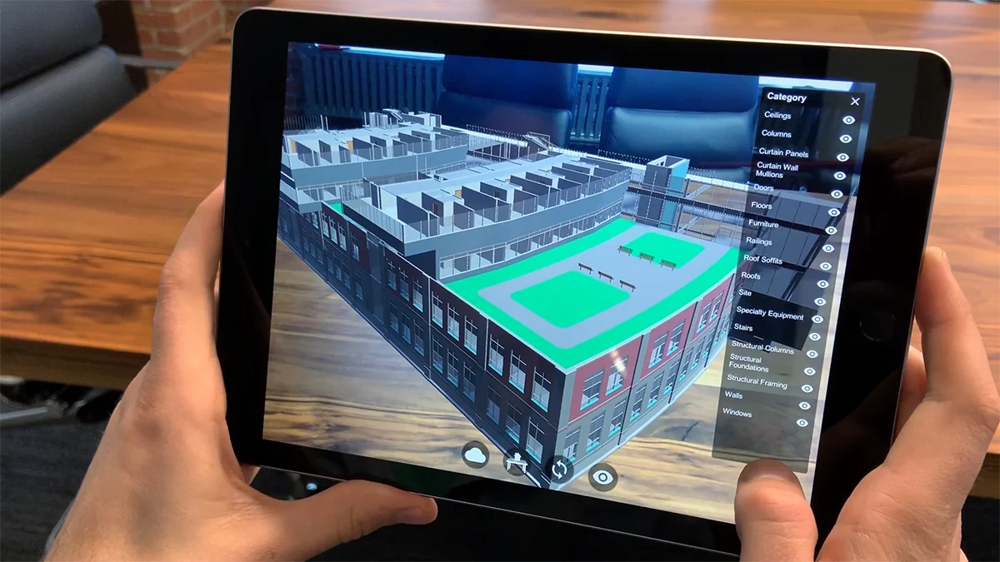
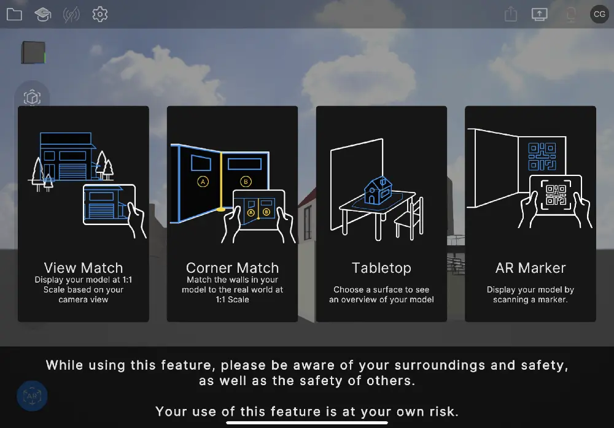

Reflect


Description
Unity Reflect facilitated the integration of Building Information Modeling (BIM) data and other CAD data into Unity's real-time engine, enabling interactive 3D visualization and collaboration. It allowed multiple users to access and interact with the same 3D models, facilitating better communication and coordination among project stakeholders. Unity Reflect was available on various platforms, including PC, Mac, iOS, and Android, as well as VR headsets like HTC Vive and Oculus Rift.